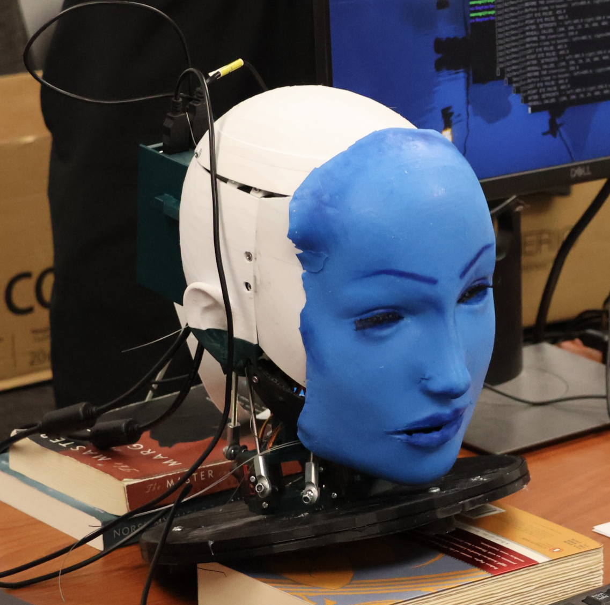
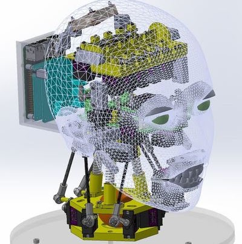
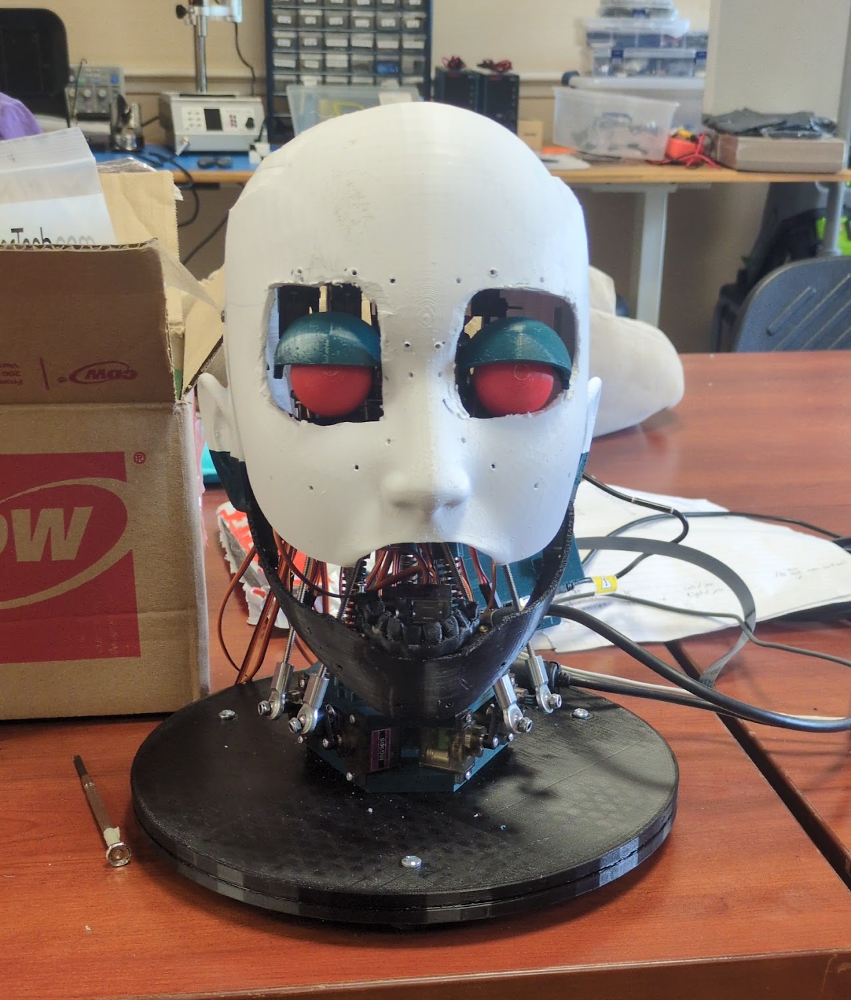
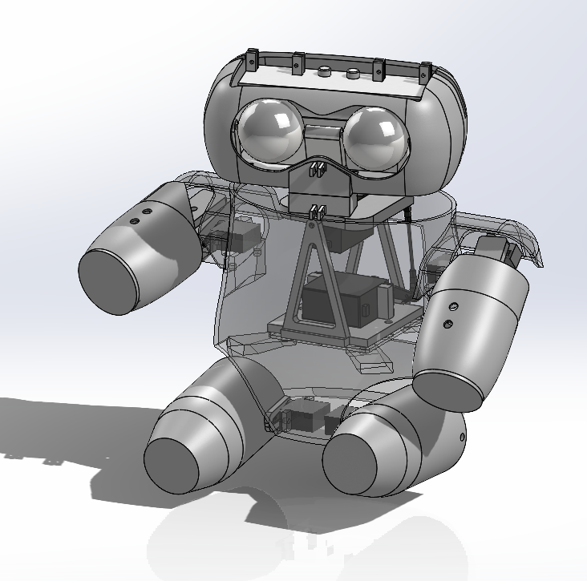
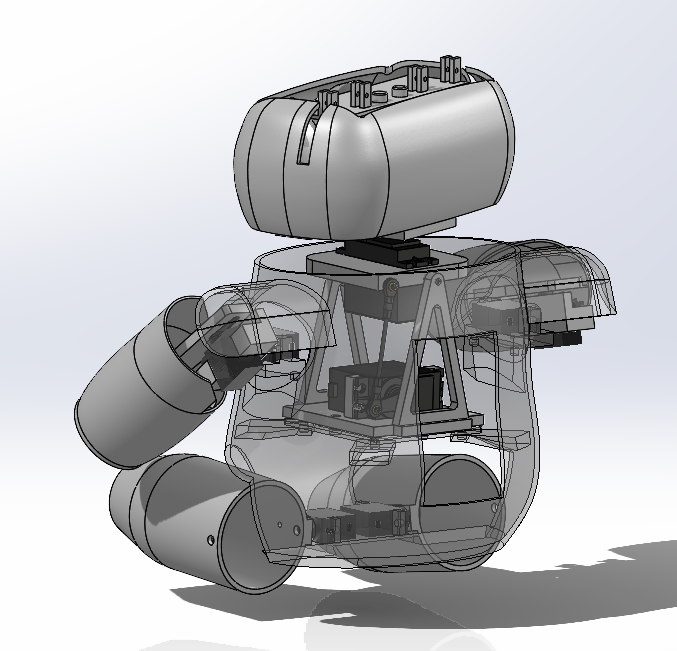
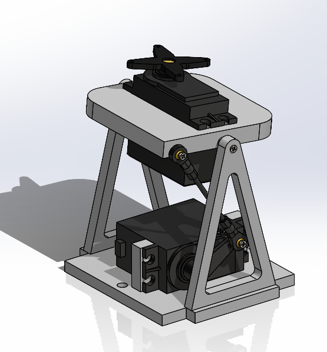
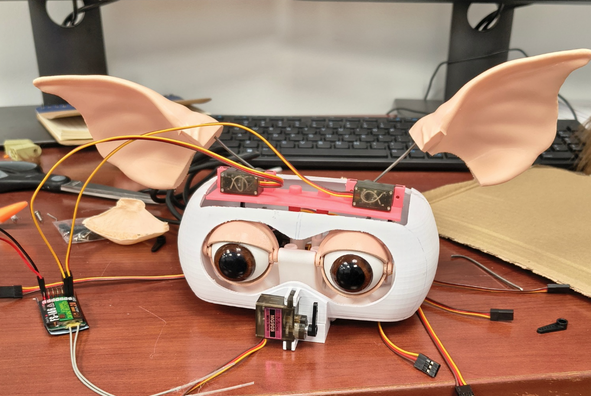
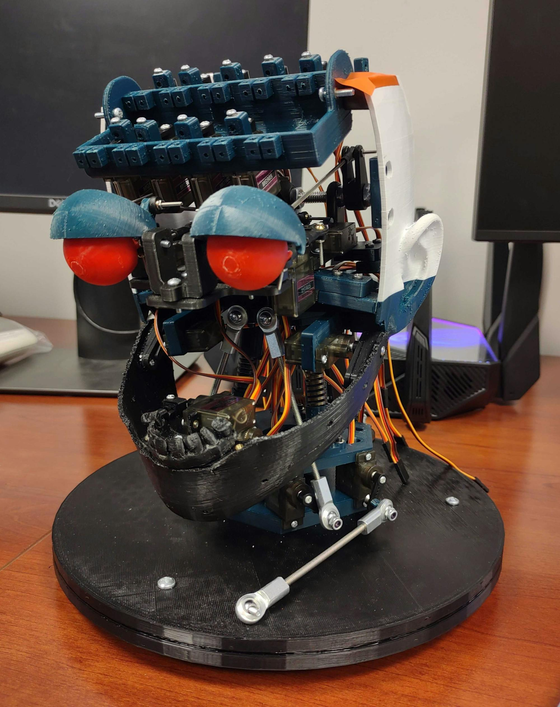

Animatronic Systems
Through two projects with Ohio University's Digital Enterprise Collaboratory, I progressed from assembling and troubleshooting an existing animatronic design to leading the mechanical development of an original system.


Creating believable motion inside a compact system
Animatronics combine many small mechanisms inside a limited volume. Servos, linkages, printed parts, wiring, structure, and exterior shells all have to coexist while producing controlled motion without interference. The design problem is therefore not just making one mechanism work—it is making every mechanism work together.
Limited space
Multiple mechanisms and electronics share the same internal volume.
Coordinated motion
Head, arms, legs, eyes, ears, and eyelids must move without colliding.
Manufacturability
Parts need to be practical to print, assemble, repair, and replace.
Iteration
Physical fit and motion often reveal issues that are not obvious in CAD.
EVA — Learning Through Recreation & Integration


Starting point
EVA was my first major animatronics project. The goal was to recreate an existing Columbia University design and bring the mechanical system to a working state at Ohio University.
My contribution
My work centered on understanding the assembly, building it, identifying discrepancies between the available design information and the physical system, and troubleshooting fit, alignment, motion, and integration issues as the animatronic came together.
From understanding mechanisms to designing them
EVA taught me what happens when CAD becomes hardware: limited space, tolerance buildup, interference, wiring conflicts, and mechanisms that need adjustment after assembly. Gizmo gave me the opportunity to apply those lessons from the beginning.
Gizmo — Original Mechanical Development
I served as Mechanical Design Lead and created the final CAD models and mechanisms for the body, arms, legs, and neck, while contributing heavily to the head design. The requested motions came from the project leader; my job was to create mechanisms that achieved those motions without turning the project into an unnecessarily complex robotic system.


Designing the requested motion without unnecessary complexity
Two-axis neck
The head needed to look left/right and tilt side-to-side. An early concept tried to adapt a Stewart-platform style mechanism, but it became too complicated for the available space. I replaced it with a simpler arrangement: one servo rotates the head-support platform for left/right motion, and a second servo rotates that platform about another axis for tilt.
Arms
The arms needed a windmill-like up/down motion from the side to slightly above horizontal, plus a smaller side-to-side movement. I designed the mechanism around those two required motions without adding unnecessary arm twist.
Legs
The legs required a single-axis hip motion similar to the forward/backward movement of walking. The mechanism stayed intentionally simple because additional degrees of freedom were not needed.
Head details
The eyes were servo-driven with ball-joint-like motion for up/down/left/right movement. The head also included actuated eyelids and ears, which had to be packaged alongside the neck, wiring, and outer shell.


The physical system drove the next CAD revision

Gizmo was developed through an iterative loop between SolidWorks and the physical build. Printed parts and mechanisms were assembled, checked for fit and motion, and revised when the complete system exposed interference or packaging issues.
The exterior shells also required repeated rework because another team member needed to sew the fur covering around the body. The shells had to provide usable attachment surfaces while protecting electronics and avoiding interference with internal mechanisms.
Two completed animatronics, two different learning experiences
EVA taught me how to diagnose issues in an existing complex system. Gizmo challenged me to anticipate those issues during original mechanical design and to think about every mechanism as part of a complete assembly.